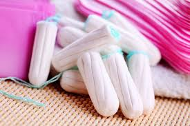
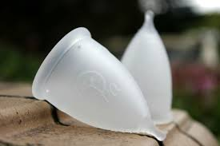
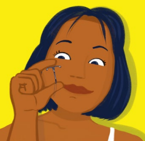
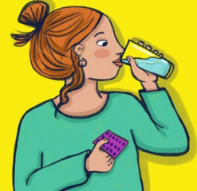
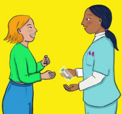
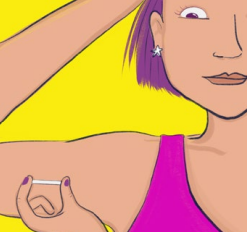
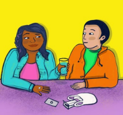

¿Que es el genero?
Desde que nacemos, según nuestros genitales, nos asignan un género: varón o mujer. Y así nos llaman, nos visten y nos hacen jugar con juguetes “de nenas” o “de nenes”. Esto lo vamos aprendiendo casi sin darnos cuenta en la familia, a través de los medios de comunicación, en el barrio, en la escuela. El género tiene que ver con lo que cada sociedad espera de las personas, por ser varón o mujer.
Muchas veces se piensa que ciertas actividades son “cosas de mujeres” o “cosas de varones”. Y esto, ¿no es re injusto? Una sociedad más justa es aquella que respeta por igual a todas las personas.
Estereotipos
“Rudo”,“delicada”,“ganador”, “amorosa”.
Estas etiquetas a veces se toman como verdades absolutas, aunque en realidad no lo son. Son estereotipos. Muchas veces lo que se sale de lo “esperado” es visto con malos ojos. Esto siempre provoca situaciones de desigualdad que son injustas.
Tomar decisiones
Ya desde la niñez vamos aprendiendo a tomar decisiones sobre la forma de vestirnos, de peinarnos, de jugar. Hay pruebas y errores, cambios de opiniones, ayuda de personas adultas. Uno de los “estirones” que se pega en la adolescencia es en la autonomía, que es la capacidad de decidir por nuestra propia cuenta. Cada persona va ganando autonomía a su propio ritmo. Es algo que se va ejercitando, como cuando se aprende a andar en bicicleta.
Primero se necesita el sostén de las rueditas y de una persona adulta que acompañe.Mientras aprendemos hay muchas caídas y raspones, pero al practicar vamos necesitando cada vez menos ayuda hasta que sentimos seguridad. Lo mismo pasa con otras situaciones en nuestra vida. Si nos dan la posibilidad de decidir, crecemos en autonomía y nos preparamos para tomar los propios camino
Deseo sexual
En la pubertad va apareciendo el deseo sexual,la atracción por otras personas, y también distintas sensaciones y cambios en el cuerpo. Por ejemplo, es posible que tengas una erección. ¿Pero qué es una erección? Es cuando el pene se para, se pone más duro y se agranda. Esto mismo le pasa al clítoris. Puede pasar si te cruzás con alguien que te gusta, si ves una foto que te resulta atractiva o si soñás o fantaseás con algo que te causa placer. Ocurre desde que nacemos. Puede suceder sin esperarlo, es algo común.
También te pueden dar ganas de masturbarte, que es cuando acariciás tus propios genitales u otras partes de tu cuerpo para explorarlo y reconocerlo, así como para experimentar sensaciones placenteras. Masturbarse es una práctica habitual y saludable, que no tiene nada de malo, si se realiza en la intimidad. Se da tanto en las chicas como en los chicos,y puede realizarse a cualquier edad. También está bien si no sentís deseo de masturbarte
Puede pasar que cuando dormís se produzca una eyaculación o un aumento de la humedad vaginal. Cuando te despertás, podés encontrar tu ropa interior mojada. No te preocupes, esa humedad es semen o flujo vaginal.
Cambios en nuestro cuerpo
Todos los cuerpos son diferentes.Todas las partes del cuerpo son diferentes en cada persona. Hay muchas formas de orejas. Hay narices de distinto tamaño y forma. Lo mismo pasa con los pies, los ojos… y todas las partes del cuerpo.
También pasa con los genitales: son diferentes en cada persona. Son partes del cuerpo íntimas y muy sensibles. Tocarlos puede dar placer. Hay penes y vulvas de distintos tamaños y formas. También, desde la adolescencia, los genitales están relacionados con la posibilidad de tener hijas/os. La mayoría de las personas nacen con pene y testículos o con vulva y vagina. Hay personas con genitales que pueden tener otras formas u otros tamaños; son personas “intersex”.Todos los cuerpos son distintos, no hay cuerpos mejores ni peores. Es importante tener en cuenta que nuestros genitales no definen quiénes somos.
No todas las personas con pene se sienten varones, ni todas las personas con vulva se sienten mujeres. ¿Escuchaste hablar, por ejemplo, de varones trans o de mujeres trans? En nuestra sociedad, las personas nos identificamos de diferentes maneras y no solo como varones o como mujere
Menstruacion
La menstruación es un sangrado que se produce una vez por mes, que comienza a aparecer en la pubertad. No hay que asustarse cuando se produce ese sangrado, es esperable y tiene que ver con el crecimiento y desarrollo.Viene del útero y sale por la vagina.Puede durar entre 3 y 7 días. Y aunque parezca mucha cantidad de sangre, no sale en total más que una tacita chica de café. Entre el primer día de una menstruación y el primer día de la siguiente menstruación, el cuerpo atraviesa un proceso que se llama ciclo menstrual. Cada ciclo dura entre 21 y 35 días.
Se cuenta como día 1 de cada ciclo el día en que cae la primera gotita. La primera menstruación ocurre entre los 9 y 15 años,después de otros cambios, como el crecimiento de los pechos y la aparición de pelos. Y deja de venir, más o menos, a partir de los 50 años En los primeros años de menstruación, los ciclos son irregulares. Es decir, hay meses que dura más y otros, menos. Esto pasa porque el cuerpo todavía está madurando.Te recomendamos anotar o marcar en un calendario las fechas en que te viene y se va la menstruación cada mes, para conocer mejor cómo se da tu ciclo.
Protectores para la menstruación
Se trata de una compresa muy fina y absorbente de higiene femenina. Se ponen en el refuerzo de la ropa interior para absorber el flujo vaginal o el flujo menstrual ligero.
Toallitas Sanitarias
Tampones
Eva Copa
CUIDADOS ANTICONCEPTIVOS
Los métodos anticonceptivos (MAC) sirven para evitar o reducir la posibilidad de un embarazo en una relación sexual. Algunos métodos actúan como “barrera” para que los espermatozoides no puedan llegar hasta el óvulo. Otros evitan la ovulación.
¿Qué MAC existen?
Preservativo
Es el único método que, además de evitar el embarazo, también protege de las infecciones de transmisión sexual.
DIU
Se coloca dentro del útero. Dura hasta 10 años.
Pastillas
Se toman todos los días.
Inyecciones
Algunas se colocan una vez al mes; otras, cada 3 meses.
Implante
Es una varilla, del tamaño de un fósforo, que se coloca en el antebrazo. Dura 3 años.
Pastillas de Emergencia
Se usan para reducir las posibilidades de embarazo en los casos en que se tuvo una relación sexual sin protección o en que falló el método usado. Hay que tomarla lo antes posible. Se entregan en forma gratuita en guardias de hospitales y centros de salud.